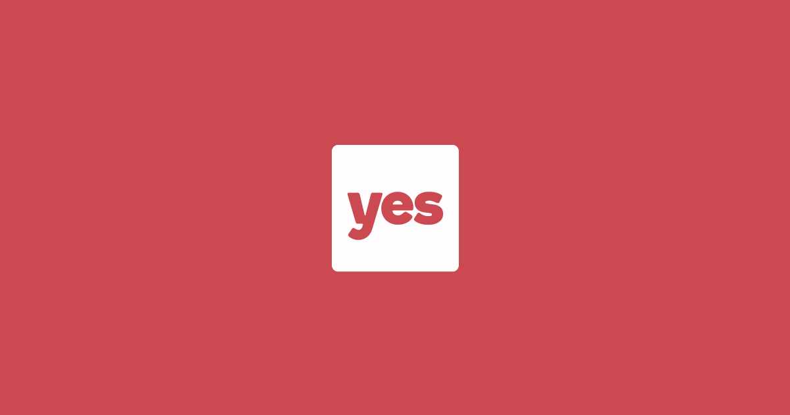
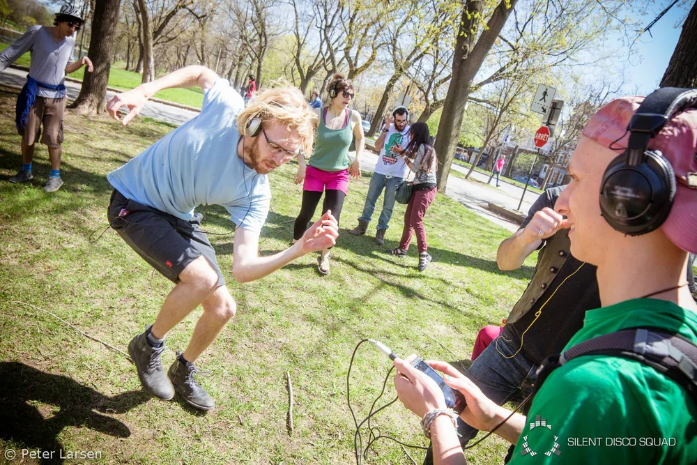
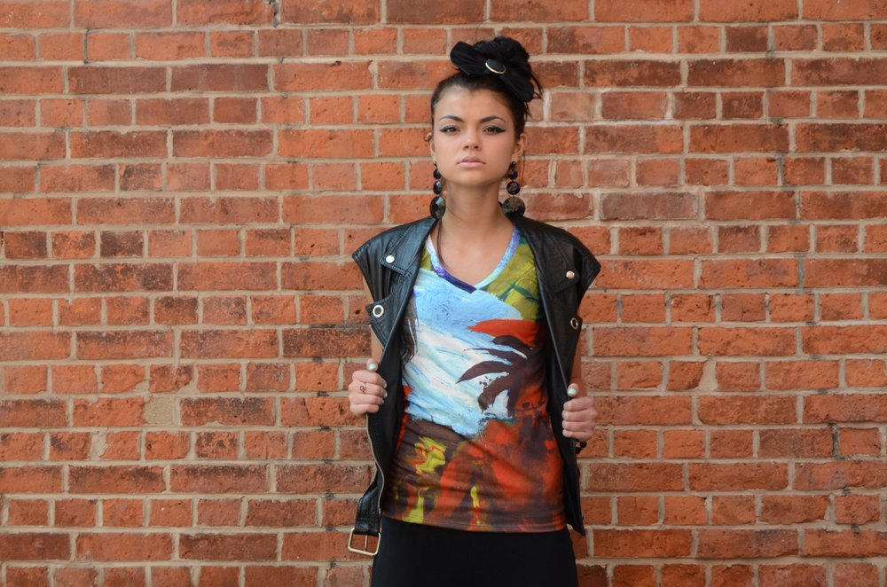

I co-founded my first startup while an undergraduate at McGill University in 2011. Since then, I've worked at two other early stage startups, the most recent of which was acquired by Lyft. I also enjoy advising startups individually and through programs like the Dobson Center for Entrepreneurship and NextAI.
Tiptree Systems
I founded Tiptree Systems to build AI systems for researchers. Our product, Althea, is an AI assistant for scientific work — it performs deep literature reviews, answers research questions with well-sourced answers, and helps researchers tap into their scientific network. Althea works where researchers do: email, SMS, WhatsApp, and web. Trusted by top AI researchers at institutions including Mila, MPI, MIT, Oxford, and the University of Waterloo.
Visit Tiptree Systems →NextAI - Scientist-in-Residence
2021: Next AI is a world class program for artificial intelligence based ventures and technology commercialization. My role, as one of three Scientists-in-Residence, is to support this cohort's early-stage startups through technical and business mentorship.
Read More →
YesGraph
2016: I joined a handful of people working for Ivan Kirigin at Yesgraph. Funded by YC, A16Z, Accel, and Bloomberg Beta, YesGraph helped businesses grow by recommending exactly who a user should invite using machine learning and social graph analysis. YesGraph was subsequently acquired by Lyft.
Read More →
Silent Disco Squad
2013: I co-founded Silent Disco Squad, a social music business that organizes headphone danceparties in public spaces. I managed product development of a web platform from inception to production, enabling more than 10,000 people to dance through the streets in almost 100 cities around the world.
Read More →
Moral Fibers
2011: I co-founded Moral Fibers, an ethical e-commerce clothing company that gave artists in the developing world a full-time job creating art for fashion.
Read More →